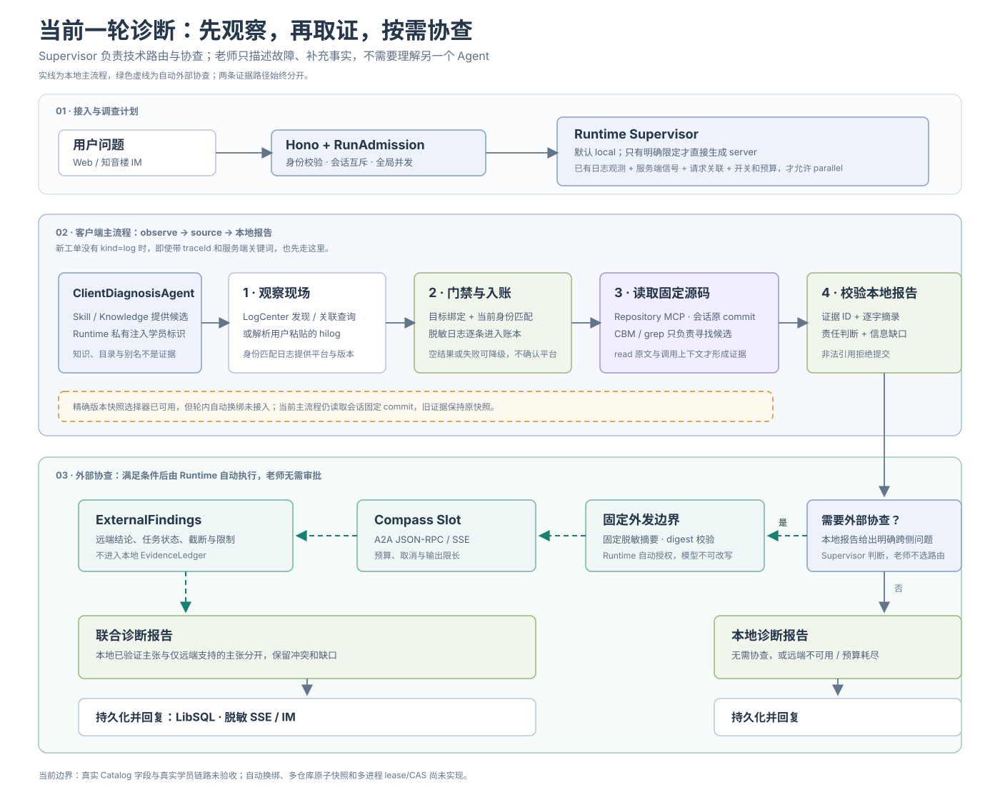
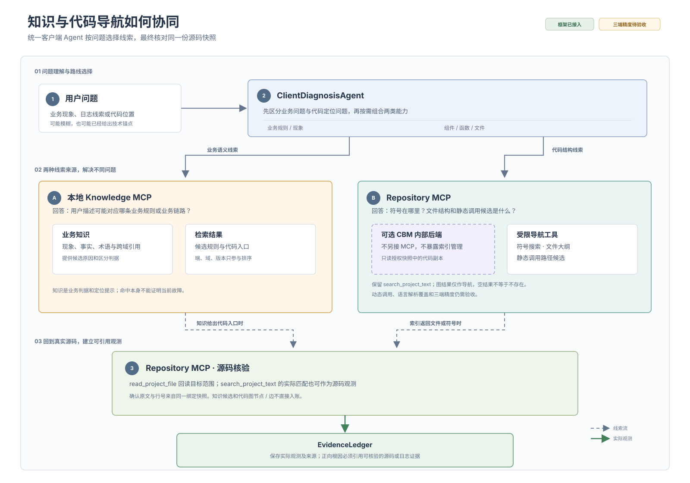
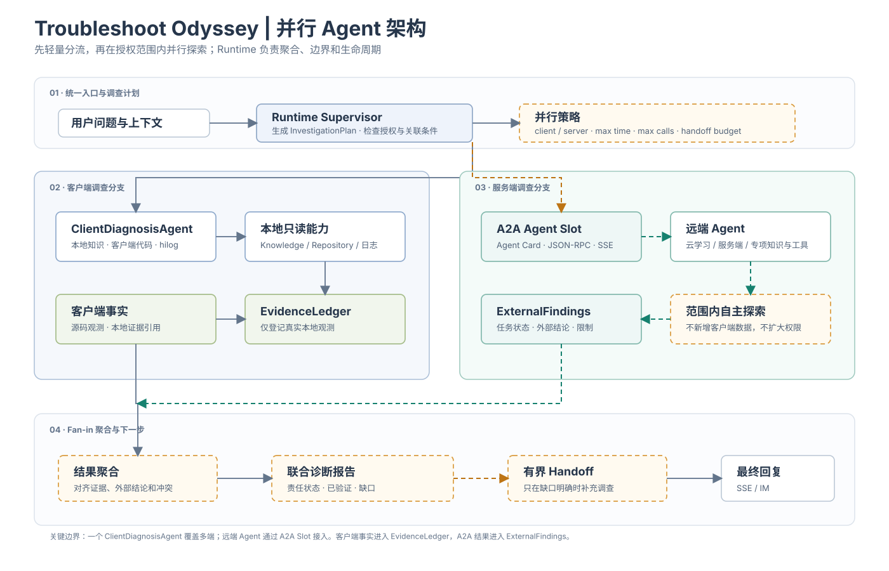

01 · 系统总架构
产品入口、Mastra Runtime、本地能力、外部系统和持久化

技术架构分享 · 2026-11-10
面向 HarmonyOS 及多端问题的证据驱动诊断工作台。把模糊现象转成可追问、可取证、可复核、可沉淀的排查过程。
产品入口、Mastra Runtime、本地能力、外部系统和持久化

规范知识关系、Graphify 代码图和源码证据的边界

Runtime Supervisor、客户端与服务端分支、聚合和有界交接

这不是一个只回答“可能是什么原因”的问答机器人，而是一套证据驱动的问题排查工作台。
用户可以输入自然语言问题、hilog、代码片段，也可以绑定本地工作区或 Git 仓库。系统通过本地知识、只读代码能力、日志能力和 Agent 协作，逐步收窄可能原因并生成带证据边界的诊断报告。
核心原则：知识提供候选和判据，Agent 组织调查，源码和日志等实际观测支撑结论。服务端 Agent 的返回保留外部来源，不能伪装成本地证据。
客户端只有一个统一的 ClientDiagnosisAgent，同时处理 HarmonyOS、iOS 和 Android；端差异由会话端上下文、Skill、知识排序和仓库能力适配处理。服务端或专项领域 Agent 通过 A2A 插槽接入，Compass 是第一个具体实例。
| 组件 | 职责 | 扩展方式 |
|---|---|---|
| Runtime Core | 会话、权限、预算、并行、聚合、证据和报告 | 保持稳定内核 |
| ClientDiagnosisAgent | 统一处理 HarmonyOS / iOS / Android 客户端问题 | 按端绑定上下文，不复制 Agent |
| A2A Agent Slot | 连接服务端或专项远端 Agent | Agent Card + A2A 任务契约 |
缺少入口、版本、时间或请求标识时，先识别信息缺口。
通过只读工具读取绑定仓库和可追溯观测。
报告保留证据原文、来源、限制和未解决问题。
| 层次 | 技术 | 作用 |
|---|---|---|
| Web 工作台 | React 19、TypeScript、Vite 6、Arco Design | 会话、模型设置、工具过程和诊断报告展示 |
| 产品 API | Hono、@hono/node-server | REST、身份认证、CSRF、会话接口和 SSE 输出 |
| Agent Runtime | Node.js 22、TypeScript、Mastra 1.81 | 模型调用、Agent 编排、工具调用和流事件处理 |
| 数据校验 | Zod、AJV | 请求、配置、工具结果和报告 Schema 校验 |
| 产品存储 | LibSQL、@mastra/libsql | 会话、消息、仓库、快照和证据状态 |
| 本地能力 | MCP、@mastra/mcp、Python FastMCP | 知识检索和仓库只读能力 |
| 跨 Agent 协作 | A2A 插槽、JSON-RPC、SSE | 客户端 Runtime 与远端 Agent 通信；Compass 是首个实例 |
| 渠道与身份 | 知音楼 SSO、Yach IM | 企业身份、Web 登录和数字人 / IM 入口 |
DeepSeek 是当前正式支持的模型服务。Kimi 和其他 provider 可配置但仍属实验或未验收。Python MCP 进程提供能力，不拥有产品会话和诊断编排。
| 知识类型 | 所属方 | 接入方式 | 结果性质 |
|---|---|---|---|
| 客户端知识 | 本项目 | 本地 knowledge/ + Knowledge MCP | 客户端排查线索 |
| 远端 Agent 知识 | 对应远端 Agent | A2A Agent Slot | 外部 Agent 结论 |
客户端不直连远端 Knowledge MCP，也不复制远端知识。远端 Agent 自己决定如何检索和使用它负责的知识。
knowledge/
├── symptoms/ # 用户描述的现象和别名
├── facts/
│ ├── speaking/ # 业务事实、映射和排查经验
│ ├── contract/
│ └── shared/
├── README.md
├── AGENTS.md
└── _schema.mdMarkdown 条目使用稳定且全库唯一的 name。字段包括用户别名 aliases、业务域 domains、适用端 applies_to、来源权威 authority、维护与人工验证日期、适用版本。
一条事实只保留一份；跨域关联使用稳定引用，如 [[speaking-vad-min-speech]]。业务域和适用端影响排序，不作硬过滤或证据权威。
知识负责缩小候选范围，不单独证明当前故障成立。`official` 或 `code` 表示来源类型可靠，仍不能替代本次实际观测。
| 组件 | 职责 | 边界 |
|---|---|---|
| Knowledge MCP | 术语、候选、判据和代码锚点 | 不证明故障成立 |
| Skill | 指导 Agent 何时检索、追问或取证 | 不代替 Runtime 安全校验 |
| Repository MCP | 读取绑定快照中的真实源码 | 不修改仓库或执行构建 |
| EvidenceLedger | 登记真实观测并校验报告引用 | 不接受知识或 A2A 文本作为证据 |
当前知识库的“图谱”能力是受控关系展开：现象条目通过 references 指向事实，V2 检索通过受审核概念词表和 related_to 保留相关但不同的业务对象。它用于解释召回路径和扩大有限候选范围，不是任意深度的图数据库查询。
| 关系层 | 查询方式 | 返回内容 | 使用边界 |
|---|---|---|---|
| 现象 → 事实 | lookup_issue 的引用展开 | 候选、引用、预览、遗漏引用和快照信息 | 候选线索，不是根因证据 |
| 用户词 → 概念 | 受控概念词表；V2 返回命中理由 | 对象、动作、状态和限定条件 | 不是通用向量语义 |
| 概念 → 相关概念 | V2 概念注册表的 related_to 元数据 | 保留相关但不同对象的关系 | 当前不独立召回，也不提供任意遍历 |
| 代码节点 → 代码关系 | 规划中的 Graphify code_graph.search/expand | 组件、方法、文件和调用导航 | 回读源码后才可形成 source 证据 |
边界：当前 MCP 没有开放任意 graph_query 或无限深度遍历。Knowledge MCP 的业务关系图和 Graphify 的代码图是两套不同索引，均不能直接替代当前案例的源码、日志等现场观测。
采用 Runtime Supervisor + 并行调查 + 条件 Handoff。
“客户端排除后才查服务端”会把等待时间叠加起来，而且客户端暂时没有找到根因不代表客户端已经被排除。跨端问题应先轻量分流，在上下文和授权满足时并行探索，再按发现补充调查。
使用本地 Knowledge MCP、绑定客户端仓库、hilog 和其他客户端观测。只拥有客户端侧工具和证据。
通过 A2A 连接服务端或专项 Agent，使用对端自己的知识、代码和日志。远端 Agent 不直接访问客户端工具。
type InvestigationPlan = {
mode: 'local' | 'server' | 'parallel' | 'unknown';
branches: Array<'client' | 'server'>;
remoteSlots: string[];
reason: string;
correlationReady: boolean;
maxHandoffRounds: number;
budget: { maxSeconds: number; maxRemoteCalls: number };
};| 报告部分 | 来源 | 证据规则 |
|---|---|---|
| 客户端事实 | 源码、hilog、本地观测 | 引用本地 evidence_refs |
| 远端 Agent 结论 | A2A 任务返回 | 独立存为 remote_conclusion，不进本地账本 |
| 综合判断 | 两侧结果的关联和冲突 | 明确标记已验证与待验证主张 |
| 责任状态 | 综合判断 | client / server / shared / unknown |
已有 SLS Catalog 查询工具、超时和轮次取消。真实平台联调、PII 脱敏、服务发现和日志证据门禁待完成；当前搜索结果只作辅助信息。
只作为绑定快照的代码导航索引。图节点和边不是证据；需要回读同一快照中的源码才能形成源码观测。
Agent Card、JSON-RPC SSE 和 CancelTask 适配器可用。聊天工具接入、通用 Slot Registry、Supervisor 工作流和联合报告尚未开放。
同一个 ClientDiagnosisAgent 覆盖 HarmonyOS、iOS 和 Android。正式开放其他端前仍需会话端绑定、知识上下文强制注入、Skill 过滤和端到端验收。
| 能力 | 状态 | 下一步 |
|---|---|---|
| Mastra Runtime | 已实现 | 完善 Supervisor、并行调查与结果聚合 |
| 本地 Knowledge MCP | 已实现 | 真实案例回流、检索和成本评估 |
| SSO / Web / IM | 基础能力已具备 | 按发布环境完成验证 |
| A2A Agent Slot | Compass P0 | P1 通用槽位、授权、并行调查、取消和联合报告 |
| LogCenter | 框架已接入 | 真实联调后再接证据门禁 |
| 统一客户端 Agent / Graphify / 多端 | 部分已有、部分规划 | 补充端上下文、Graphify 快照门禁和端到端验证 |
路线建议：公共能力框架 → A2A P1 并行调查与联合报告 → LogCenter 真实联调 → Graphify 和多端接入 → 固定问题集质量与成本评估。